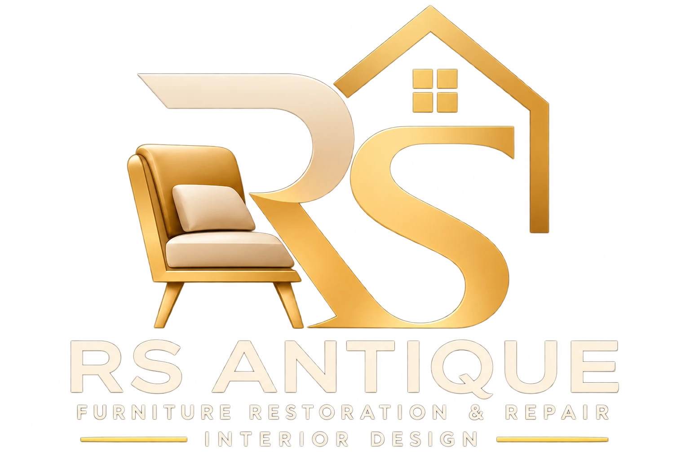

先理解，再修复。
从照片、尺寸和实际状况出发，了解使用需求，让维修范围和材料选择更清楚。

ABOUT RS ANTIQUE
我们是一家位于雪兰莪巴生的家具翻新与维修公司。
以细腻工艺，留住熟悉的舒适；以新的材质与设计，发现家的更多可能。

一张沙发，可能陪伴一家人度过许多个晚上。一把椅子，也可能承载着不舍得丢掉的记忆。比起一律换新，我们愿意先看看：这件家具，还有什么值得留下？
RS ANTIQUE FURNITURE & REPAIR 专注于家具的软包、换皮换布与翻新维修。我们会结合家具的结构、材料与使用状况，讨论适合的修复方向，再与你确认配色、触感和期望效果。
从日常使用的沙发、餐椅、办公椅，到古典雕花家具与按摩椅外部软包，我们希望让修复后的家具，不仅看起来焕新，也重新融入你的生活。
从照片、尺寸和实际状况出发，了解使用需求，让维修范围和材料选择更清楚。
尊重家具原有的形态与风格，让新的布艺、皮面与细节，自然延续原来的故事。
把坐感、使用习惯、配色和空间一起考虑，让焕新回到真正的日常。

FURNITURE · MATERIAL · SPACE
除了家具翻新，我们也可就室内风格、家具搭配、色彩与空间布局展开咨询。具体服务范围会根据你的需求与现场条件确认。
了解完整服务范围 ↗把家具照片、尺寸和你的想法发给我们，一起看看它的下一种可能。
通过 WhatsApp 开始咨询 ↗ABOUT RS ANTIQUE
We are a furniture restoration and repair company based in Klang, Selangor.
We preserve familiar comfort through careful craftsmanship and explore new possibilities through materials and design.
A sofa can hold years of family evenings. A chair can carry memories you are not ready to let go. Before replacing everything, we ask what is worth keeping.
RS ANTIQUE FURNITURE & REPAIR focuses on upholstery, material replacement and furniture refurbishment. We consider the structure, material and condition of each piece, then discuss the repair scope, colours, textures and result you have in mind.
From everyday sofas, dining chairs and office chairs to carved classic pieces and the external upholstery of massage chairs, we want restored furniture to feel at home in your life again.
We begin with photos, dimensions and condition, helping you understand the repair scope and material choices.
We respect the form and character of your furniture, using new upholstery and considered details to continue its story.
Comfort, habits, colours and surroundings all matter. A transformation should work for the way you live.
FURNITURE · MATERIAL · SPACE
Alongside restoration, we can discuss interior style, furniture coordination, colours and layout. The exact scope is confirmed around your needs and site conditions.
Explore our full service scope ↗Send us photos, dimensions and your ideas. Let’s explore what your furniture could become.
Start an enquiry on WhatsApp ↗